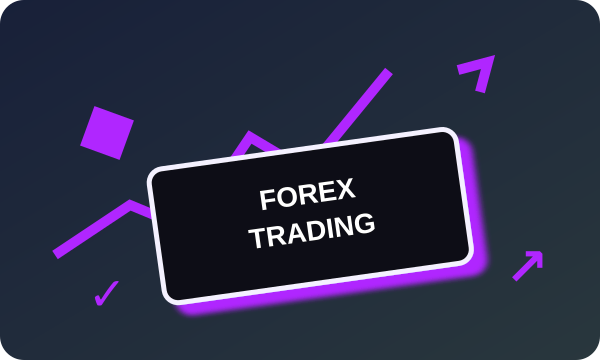
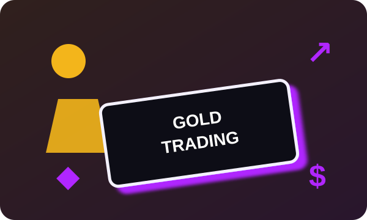
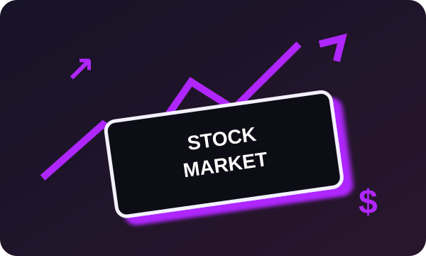
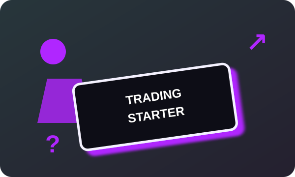
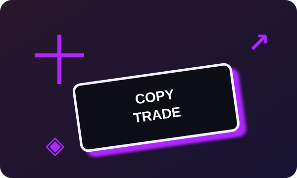
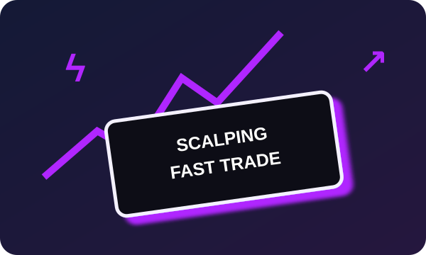

Bảng xếp hạng
sàn giao dịch
Được sắp xếp theo tiêu chí nhất định phù hợp với nhiều phong cách đầu tư khác nhau.

Top Sàn Forex Uy Tín
Tổng hợp các nhà môi giới Forex nổi bật dựa trên độ tin cậy, chi phí và chất lượng dịch vụ.
Đọc bài viết chi tiết →
Top Sàn Giao Dịch Vàng
Một loạt công cụ phân tích và sự đa dạng trong lựa chọn tài sản trên các sàn hàng đầu.
Đọc bài viết chi tiết →
Top Sàn Giao Dịch Cổ Phiếu
Khám phá các sàn giao dịch cổ phiếu hàng đầu, cung cấp mã cổ phiếu CFD và công nghệ tiên tiến.
Đọc bài viết chi tiết →
Top Sàn Giao Dịch Cho Người Mới
Những nền tảng dễ sử dụng, hỗ trợ tốt và phù hợp cho hành trình giao dịch đầu tiên.
Đọc bài viết chi tiết →
Top Sàn Hỗ Trợ Copy Trade
Tìm hiểu các nền tảng giúp bạn theo dõi và sao chép chiến lược của những trader giàu kinh nghiệm.
Đọc bài viết chi tiết →
Top Sàn Giao Dịch Scalping
Khám phá các cơ hội giao dịch ngắn hạn với chiến lược Scalping trên các sàn hàng đầu.
Đọc bài viết chi tiết →Câu hỏi thường gặp
Sàn giao dịch Forex là gì?
Sàn giao dịch Forex (Forex Exchange) là nền tảng cho phép nhà đầu tư mua và bán các cặp tiền tệ trên thị trường tài chính, nhà đầu tư có thể mua và bán các cặp tiền tệ này với hy vọng kiếm lời từ sự biến động của tỷ giá hối đoái. Hầu hết các sàn Forex đều được gọi là “Brokers - Sàn môi giới” họ cung cấp hệ thống để người nhà đầu tư có thể giam gia thực hiện giao dịch mua bán.
Vì sao nên chọn những sàn Forex nằm trong top?
Những sàn giao dịch hàng đầu sẽ có những đảm bảo được các tiêu chí như: An toàn và tin cậy, đa dạng về sản phẩm và cặp tiền tệ, phí giao dịch hợp lý, nền tảng giao dịch tiên tiến, hỗ trợ khách hàng tốt. Việc chọn các sàn giao dịch Forex uy tín và hàng đầu đem lại nhiều lợi ích quan trọng mà các sàn khác có thể không đảm bảo được. Tránh những sàn không rõ nguồn gốc hoặc không có giấy phép quản lý, hãy cẩn thận với những sàn này, có thể khiến bạn tiền mất tật mang.
Các tiêu chí đánh giá top sàn Forex là gì?
Cơ quan quản lý: Bảo đảm bởi cơ quan quản lý tài chính để đảm bảo sàn tuân thủ quy định và bảo vệ lợi ích của nhà đầu tư. Đa dạng sản phẩm và cặp tiền tệ: Số lượng và loại cặp tiền tệ, sản phẩm giao dịch mà sàn cung cấp. Phí giao dịch: Các loại phí, hoa hồng và người dùng phải trả khi giao dịch. Nền tảng giao dịch: Chất lượng và tính năng của các nền tảng giao dịch mà sàn cung cấp. Hỗ trợ khách hàng: Đội ngũ hỗ trợ khách hàng và chất lượng dịch vụ. Đánh giá từ người dùng: Ý kiến và đánh giá từ các nhà đầu tư thực tế sử dụng sàn.
Drift Brokers đánh giá và xếp hạng sàn bằng phương pháp nào?
The Brokers thông qua việc thu thập thông tin từ sàn và các nguồn đáng tin cậy, kiểm tra các tiêu chí đánh giá như an toàn, sản phẩm, phí, nền tảng giao dịch và hỗ trợ khách hàng. Chúng tôi cũng thu thập ý kiến và đánh giá từ những người dùng thực tế để đưa ra bảng xếp hạng.